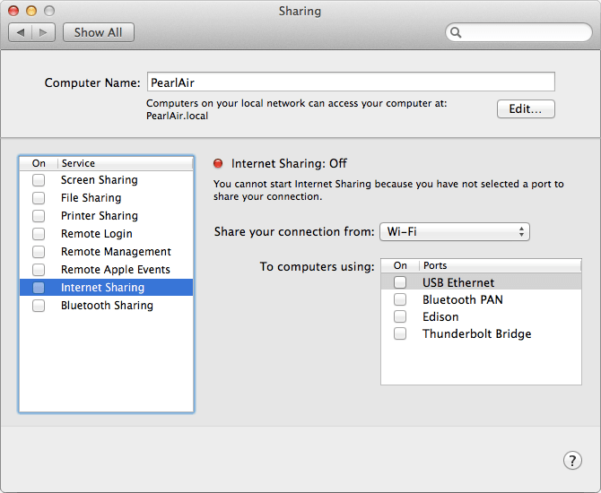
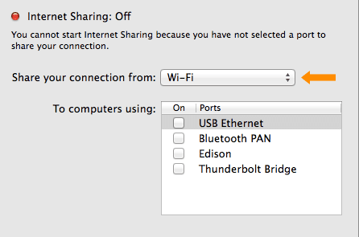
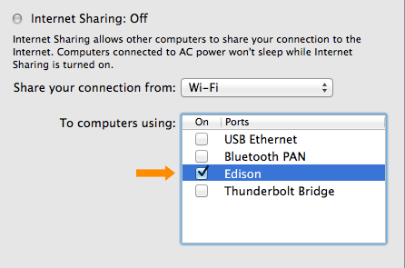
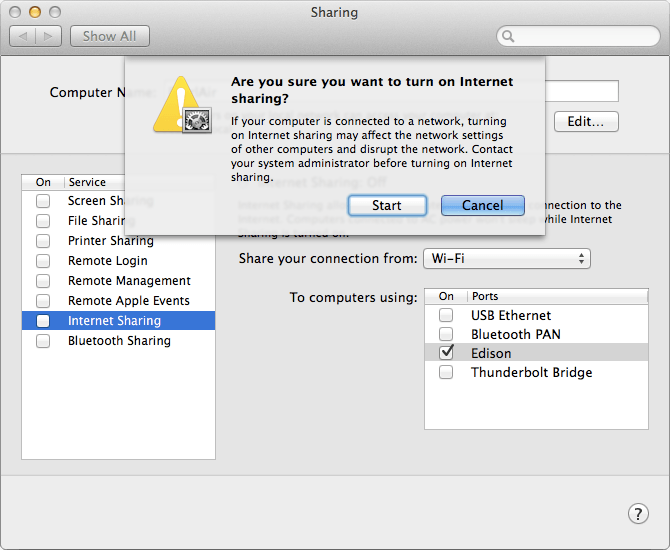

-
Open your Sharing preference settings.
(i.e. In the OS X menu bar, choose → System Preferences → Sharing)
→ System Preferences → Sharing) -
If “Internet Sharing” is currently checked in the lefthand services list, uncheck it in order to make changes to your Mac Sharing settings.

-
Select “Wi-Fi” from the “Share your connection from” dropdown list, if not already selected.

-
Check “Edison” under “To computers using”.

-
Enable sharing by checking “Internet Sharing” in the lefthand services list.
-
You will see a warning. Click “Start” to continue.

-
Unplug and replug the device mode micro-USB cable to reset the Ethernet over USB connection.
-
Use Terminal to establish a serial connection to the Intel® Edison.
Don’t know how? Refer to Shell Access. -
On your Intel® Edison, disconnect from any WiFi networks the board might be logged into using the wireless command line interface (
wpa_cli) command:wpa_cli disconnect -
Then use the
routecommand to add a default gateway. Use the same static IP address you set in the Network settings in the previous section.route add default gw 192.168.2.2
You can now use the Intel® Edison as if it is connected to the internet on its own as long as you keep the device mode micro-USB cable plugged in.
Try pinging a network from Terminal to make sure the Intel® Edison is connected to the internet through your computer’s network connection:
ping google.com
(Use the Ctrl+C keyboard command to exit the ping process.)
To re-enable WiFi on the Intel® Edison, use the configure_edison --wifi command as described in Connect Your Intel Edison to Wi-Fi.
Unable to ping anything from the Intel® Edison?
- Unplug and replug the device mode micro-USB cable to reset the Ethernet over USB connection.
- Turn your computer’s WiFi connections off, then back on.
- Restart your computer.
- Check that the IP address set in the IPv4 LAN settings is “192.168.2.2”